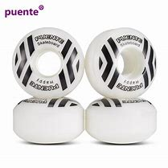

Las partes de los skates

Las Ruedas
Se clasifican según su tamaño y su dureza, por lo que tendremos que elegir las que más se adecuen a nuestro estilo y muy importante, que correspondan con los ejes que llevamos. Respecto a esto último los ejes bajos tendrán que llevar ruedas pequeñas o medias, los medios serán con ruedas medias y los ejes altos con ruedas altas.
Para los diferentes tipos de dureza podemos encontrar:
87A: son blandas y perfectas para superficies irregulares y de larga duración, aunque la velocidad es reducida. Normalmente se utiliza para skate tipo cruising.
95A: son las más usadas en Skateboard de street, ya que consiguen mayor velocidad que las 87A y siguen siendo buenas para mantener el control en desniveles.
97A: perfectas para Skateboard de half-pipes, skateparks o piscinas, ya que se consigue más velocidad que en las 95A, pero siempre en superficies lisas.
100A: son el tipo de rueda más duro y más enfocadas para nivel profesional.
En cuanto a los tamaños podemos diferenciar:
De 52mm a 55mm: son ruedas pequeñas perfectas para patinar en sitios reducidos en los que te dediques a hacer tus trucos.
De 56mm a 60mm: en este caso está enfocado a espacios más amplios, calles o skateparks donde podemos encontrarnos más irregularidades en el terreno, por lo que queremos es que las ruedas aguanten y no se queden frenadas cayendo al suelo.
60mm o más: estos tamaños se usan para Longboard donde puedes meterte por superficies de tierra incluso.
Tened cuidado al colocarlas para que queden en su sitio, ya que el desgaste de estas tiene que ser uniforme, si vemos que se desvía significa que la posición es incorrecta.
·Las partes del skate
·La tabla
·La lija
·Los rodamientos
·Los ejes